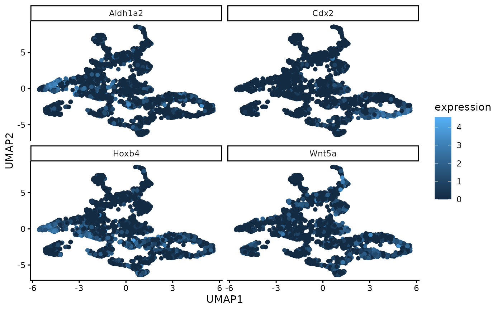

A function to generate UMAP coordinates from the low-dimensional embedding of the gene expression data. These coordinates can later be plotted with the plotUmapFromWSIR function. Those two functions are separate so that you can generate the UMAP points only once using this function (which may take a long time), then modify the resulting plot as much as desired with the plotUmapFromWSIR function.
Value
matrix of UMAP coordinates of dimension nrow(coords) * 2. Output of this function can be directly used as the input to the plot_umap function.
Examples
data(MouseData)
wsir_obj = wSIR(X = sample1_exprs,
coords = sample1_coords,
optim_params = FALSE,
alpha = 4,
slices = 6) # create wsir object
umap_coords = generateUmapFromWSIR(WSIR = wsir_obj)
top_genes_obj = findTopGenes(WSIR = wsir_obj, highest = 4) # create top genes object
umap_plot = plotUmapFromWSIR(umap_coords = umap_coords,
X = sample1_exprs,
highest_genes = top_genes_obj,
n_genes = 4)
umap_plot
